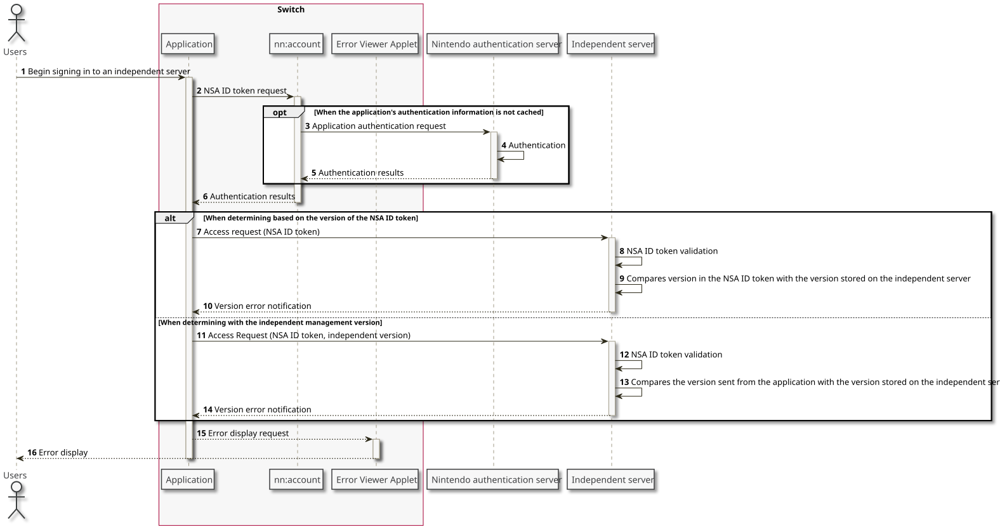

Accessing Nintendo Servers
When accessing Nintendo servers from an independent server, note that the FQDNs of the API endpoints provided by each server are assigned per environment. The independent server must switch to the appropriate FQDN to send the request to the Nintendo server that corresponds to the Nintendo platform server environment.
The following figure depicts the relationships between the different components when using the various Nintendo server environments.
- One environment identifier is always configured in the Switch system, and that setting determines the Nintendo platform server environment and the corresponding Nintendo server to which to make the request.
In general, the dd1 environment identifier is set for the Switch development hardware used by application developers. - Nintendo does not generally permit Switch applications to directly access its servers, using libraries like
nn::socketandlibcurlthat enable application developers to control the request target without going through an independent server.
When accessing a Nintendo server from a Switch application, you normally go through the provided libraries and the console system, using a format that masks the Nintendo server you want to connect to.
At that point, the library or the NX system resolves the server environment, so the application does not need to track the different connections made in the different server environments. - When accessing the Nintendo servers from an independent server, the server environment must be determined based on which server environment the connecting Switch system will use.
Determine the server environment based on the value ofissin the NSA ID token. For more information about NSA ID tokens, see 3 Connecting to an Independent Server. For more information about the correspondence between environment identifiers and theissvalue (the Nintendo authentication server Base URLs), see 6 Server Environments.
Because the FQDNs of Nintendo servers differ depending on the environment, the independent server must have information about the Nintendo server system used and the FQDN corresponding to the environment ahead of time.
For more information about the environment and its corresponding FQDN, see the service manual of the Nintendo server used.
Managing Users on the Independent Server
When managing user information on the independent server, avoid managing the information by using the network service account internal ID as the primary key. We recommend that you use a design where the user IDs, which are managed by the independent server, are associated with the internal IDs of network service accounts, and provide services separately for each network service account.
We recommend this practice for the following reasons.
- To prevent a situation where it is impossible to create users on the independent server without the network service account when the independent service supports login using accounts other than the network service account
- To avoid the need to create network service accounts when issuing a large number of accounts for purposes such as debugging the independent server
- Nintendo cannot provide network service accounts for purposes such as debugging.
To manage and identify users, include not only the network service account internal ID, but also the value that identifies the Nintendo platform server environment (the iss value in the NSA ID token).
For an example of managing user information on independent servers, see 10.3 Example of Retaining Data When Managing Users on an Independent Server when required.
Notifications for Errors Occurring With Independent Servers
nn::err::ShowUnacceptableApplicationVersionError() function and display the error. The reason for this exception is that even if you prompt users to install the patch, if you do not call this function they may not be prompted to install the patch when the application is restarted. When you call this function, the patch distribution information that is stored in the Switch gets updated and the user is prompted in the error viewer to restart the application.Compatibility With Earlier Versions of Applications
Even if update data has been released for an application, there is no assurance that all users will be using the application with the update data applied. As a result, there is always a possibility that access to the independent server will come from a mix of both the earlier version of the application and the latest updated version.
Use one of the following procedures to make sure that no problems arise after update data has been released.
- Design your independent server to handle access without problems from both versions of the application (the versions both before and after the update data has been applied).
- Deny access to the independent server from applications that have not applied the update data.
Breaking Compatibility Gradually Using the Nintendo Authentication Server
If it is not necessary to block access from earlier versions of the application at the same time that the patch is released, you can set the Nintendo authentication server to break compatibility gradually.
For more information, see Nintendo Switch Online Play Guide > Compatibility With Earlier Versions of an Application.
Breaking Compatibility Immediately
Use the following method if you need to block access from earlier versions of the application at the same time that the patch is released.
There is a feature in NEX and NPLN to block access from applications that have not applied the patch. For applications that use NEX or NPLN and use an independent server at the same time, if you design the application to first log in to the NEX/NPLN server and to not access the independent server if that login fails, access to the independent server from earlier versions of the application will not occur.
For more information, see the following documentation.
- For NEX: Nintendo Switch NEX Guide > Tips and Tricks > Patches and Compatibility
- For NPLN: NPLN Manual > NPLN Guide > Checking Application Version and Patch Distribution
In this method, a process is implemented to send version information to the independent server from the application trying to access the server, and the independent server determines whether the version is an earlier version and access from the application should be restricted.
Implementation that is specific to the application and independent server is required. Use this method when access to the independent server from multiple versions of the application is not acceptable.
The following two versions can be used to determine the version of the independent server.
- Version that the application independently manages and uses
- Version embedded in the metadata of the Switch application
The version value embedded in the metadata of the Switch application is the version value that the developer wrote in the NMETA file, when the application image was being created using AuthoringTool.
Because this value is set in the nintendo.av value of the NSA ID token, you can block access from selected versions by setting the versions for which you want to block access in the independent server, and comparing the version of the NSA ID token with those versions.
The application authentication information that determines the nintendo.av value of the NSA ID is cached within the Switch for a certain period of time. However, when retrieving the NSA ID token after the patch data is applied, the cache is freed and application authentication recurs. As a result, the earlier version value will not be sent to the independent server as a token from the application with the update data applied, based on the application's authentication information cached prior to the patch being applied.
If you are using this method to show errors to users in the Switch application, call the nn::err::ShowUnacceptableApplicationVersionError() function and show the errors, as described in Notifications for Errors Occurring With Independent Servers.

CONFIDENTIAL